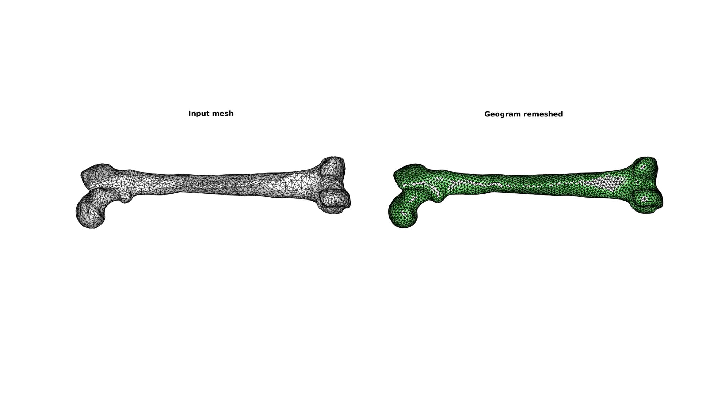
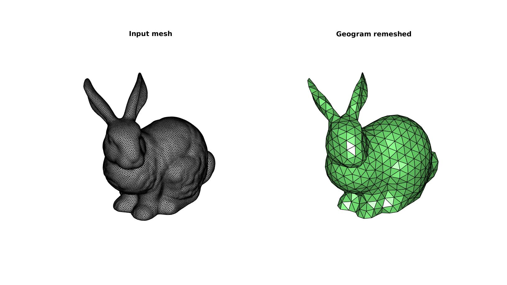
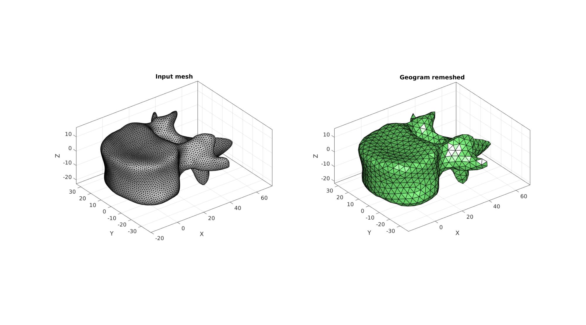
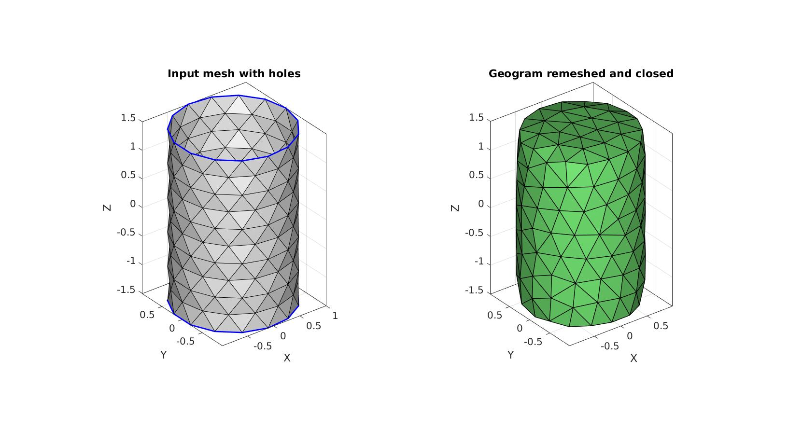
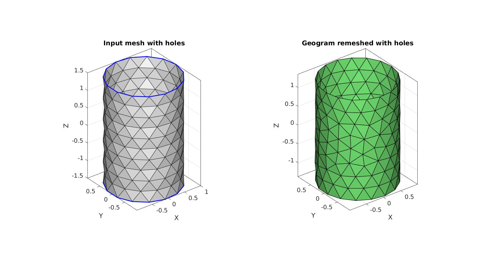

Contents
- ggremesh
- Syntax
- Description
- Examples
- Example 1: Remeshing a triangulated surface isotropically
- Example 2: Remeshing a triangulated surface with desired number of points
- Example 3: Remeshing a triangulated surface with desired point spacing
- Example 4: Setting pre- and prost-processing settings e.g. to close holes
- Example 5: Setting pre- and prost-processing settings e.g. to avoid closure of holes
ggremesh
Below is a demonstration of the features of the ggremesh function
Syntax
[Fn,Vn]=ggremesh(F,V,optionStruct)
Description
This function uses the external library Geogram to remesh the input triangulation defined by the faces F and the vertices V. In particular the code "vorpalite" is used. An additional option structure may be provided where users can set particular parameters for Geogram.
Below the options and defaults are provided: optionStruct.nb_pts=size(V,1); %number of points optionStruct.anisotropy=0; %Use anisotropy (~=0) to capture geometry or favour isotropic triangles (=0) optionStruct.pre.max_hole_area=100; %Max hole area for pre-processing step optionStruct.pre.max_hole_edges=0; %Max number of hole edges for pre-processing step optionStruct.post.max_hole_area=100; %Max hole area for post-processing step optionStruct.post.max_hole_edges=0; %Max number of hole edges for post-processing step optionStruct.disp_on=1; %Turn on/off displaying of Geogram text
Instead of nb_pts users can also specify a pointSpacing to be used instead of nb_pts. This is not a Geogram feature but a GIBBON option which is translated to the number of points for Geogram remeshing. This is and example for a desired point spacing of 4: optionStruct.pointSpacing=4
Geogram website: http://alice.loria.fr/index.php/software/4-library/75-geogram.html
Geogram license: http://alice.loria.fr/software/geogram/doc/html/geogram_license.html
Lévy B., Bonneel N. (2013) Variational Anisotropic Surface Meshing with Voronoi Parallel Linear Enumeration. In: Jiao X., Weill JC. (eds) Proceedings of the 21st International Meshing Roundtable. Springer, Berlin, Heidelberg. https://doi.org/10.1007/978-3-642-33573-0_21
See also: http://alice.loria.fr/publications/papers/2012/Vorpaline_IMR/vorpaline.pdf https://www.ljll.math.upmc.fr/hecht/ftp/ff++days/2013/BrunoLevy.pdf
Examples
clear; close all; clc;
Plot settings
fontSize=15; faceColor='b'; faceAlpha=1; edgeColor='k'; edgeWidth=0.5;
Example 1: Remeshing a triangulated surface isotropically
Get example geometry
[F,V]=graphicsModels(5); % Get surface
Remesh using ggremesh
[Fn,Vn]=ggremesh(F,V);
Visualiza patch data
cFigure; subplot(1,2,1); hold on; title('Input mesh'); gpatch(F,V,'w','k'); axisGeom; view(-75,-36); camlight headlight; axis off; subplot(1,2,2); hold on; title('Geogram remeshed'); gpatch(Fn,Vn,'gw','k',1,1); axisGeom; view(-75,-36); camlight headlight; axis off; gdrawnow;
Example 2: Remeshing a triangulated surface with desired number of points
Get example geometry
[F,V]=graphicsModels(1); % Get surface
Remesh using ggremesh
optionStruct1.nb_pts=500; %Set desired number of points
[Fn,Vn]=ggremesh(F,V,optionStruct1);
Visualiza patch data
cFigure; subplot(1,2,1); hold on; title('Input mesh'); gpatch(F,V,'w','k'); axisGeom; camlight headlight; axis off; subplot(1,2,2); hold on; title('Geogram remeshed'); gpatch(Fn,Vn,'gw','k',1,1); axisGeom; camlight headlight; axis off; gdrawnow;
Example 3: Remeshing a triangulated surface with desired point spacing
Get example geometry
[F,V]=graphicsModels(11); % Get surface
Remesh using ggremesh
optionStruct2.pointSpacing=4; %Set desired point spacing optionStruct2.disp_on=0; % Turn off command window text display [Fn,Vn]=ggremesh(F,V,optionStruct2);
Visualiza patch data
cFigure; subplot(1,2,1); hold on; title('Input mesh'); gpatch(F,V,'w','k'); axisGeom; camlight headlight; subplot(1,2,2); hold on; title('Geogram remeshed'); gpatch(Fn,Vn,'gw','k',1,1); axisGeom; camlight headlight; gdrawnow;
Example 4: Setting pre- and prost-processing settings e.g. to close holes
Get example geometry
inputStruct.cylRadius=1; inputStruct.numRadial=15; inputStruct.cylHeight=3; inputStruct.numHeight=11; inputStruct.meshType='tri'; % Derive patch data for a cylinder [F,V]=patchcylinder(inputStruct);
Remesh using ggremesh
optionStruct3.nb_pts=size(V,1); %Set desired number of points optionStruct3.disp_on=0; % Turn off command window text display optionStruct3.pre.max_hole_area=10; %Max hole area for pre-processing step optionStruct3.pre.max_hole_edges=20; %Max number of hole edges for pre-processing step % optionStruct3.post.max_hole_area=10; %Max hole area for post-processing step % optionStruct3.post.max_hole_edges=20; %Max number of hole edges for post-processing step [Fn,Vn]=ggremesh(F,V,optionStruct3); % Visualiza patch data Eb=patchBoundary(F,V); cFigure; subplot(1,2,1); hold on; title('Input mesh with holes'); gpatch(F,V,'w','k'); gpatch(Eb,V,'none','b',1,2); axisGeom; camlight headlight; subplot(1,2,2); hold on; title('Geogram remeshed and closed'); gpatch(Fn,Vn,'gw','k',1,1); axisGeom; camlight headlight; gdrawnow;
Example 5: Setting pre- and prost-processing settings e.g. to avoid closure of holes
Get example geometry
inputStruct.cylRadius=1; inputStruct.numRadial=15; inputStruct.cylHeight=3; inputStruct.numHeight=11; inputStruct.meshType='tri'; % Derive patch data for a cylinder [F,V]=patchcylinder(inputStruct);
Remesh using ggremesh
optionStruct3.nb_pts=size(V,1); %Set desired number of points optionStruct3.disp_on=1; % Turn off command window text display optionStruct3.pre.max_hole_area=100; %Max hole area for pre-processing step optionStruct3.pre.max_hole_edges=0; %Max number of hole edges for pre-processing step [Fn,Vn]=ggremesh(F,V,optionStruct3); % Visualiza patch data Eb=patchBoundary(F,V); cFigure; subplot(1,2,1); hold on; title('Input mesh with holes'); gpatch(F,V,'w','k'); gpatch(Eb,V,'none','b',1,2); axisGeom; camlight headlight; subplot(1,2,2); hold on; title('Geogram remeshed with holes'); gpatch(Fn,Vn,'gw','k',1,1); axisGeom; camlight headlight; gdrawnow;
%%%%%%%%%%%%%%%%%%%%%%%%%%%%%%%%%%%%%%%%%%%%%%%%%%%%%%%%%%%%%%%%%%%%%%% ------> Geogram/vorpalite for resmeshing <------ 16-Jul-2021 10:35:36 # Export mesh input file. 16-Jul-2021 10:35:36 # Run Geomgram/vorpalite. 16-Jul-2021 10:35:36 ______________________________________________________________________________ | | | o-[config ] Configuration file name:geogram.ini | | Home directory:/root | | o-[I/O ] Output = /mnt/data/MATLAB/GIBBON/data/temp/temp_out.obj | | Loading file /mnt/data/MATLAB/GIBBON/data/temp/temp.obj... | | (FP64) nb_v:165 nb_e:0 nb_f:300 nb_b:30 tri:1 dim:3 | | Attributes on vertices: point[3] | | o-[Load ] Elapsed time: 0 s | ___________________________ _/ =====[preprocessing]===== \________________________________________________ | | | o-[CmdLine ] using pre:epsilon=0(0%) | | using pre:min_comp_area=0.558063(3%) | | o-[Components ] Nb connected components=1 | | Mesh does not have small connected component (good) | | o-[CmdLine ] using pre:max_hole_area=100 | | o-[Validate ] Mesh does not have 0-area facets (good) | | o-[CmdLine ] using pre:margin=0(0%) | | o-[Pre ] Elapsed time: 0 s | _______________________ _/ =====[remeshing]===== \____________________________________________________ | | ||| o-[Newton ] Elapsed time: 0.04s | | o-[Remesh ] Computing RVD... | | o-[Validate ] (FP64) nb_v:165 nb_e:0 nb_f:296 nb_b:34 tri:1 dim:3 | | Attributes on vertices: point[3] | | o-[Remesh ] Elapsed time: 0.05 s | ____________________________ _/ =====[postprocessing]===== \_______________________________________________ | | | o-[CmdLine ] using post:min_comp_area=0.490769(3%) | | o-[Components ] Nb connected components=1 | | Mesh does not have small connected component (good) | | o-[CmdLine ] using post:max_hole_area=100 | | using post:max_deg3_dist=0.00387602(0.10000000000000001%) | | o-[Degree3 ] Does not have any degree 3 vertex (good) | | o-[Post ] Elapsed time: 0 s | ____________________ _/ =====[result]===== \_______________________________________________________ | | | o-[FinalMesh ] (FP64) nb_v:165 nb_e:0 nb_f:296 nb_b:34 tri:1 dim:3 | | Attributes on vertices: point[3] | | o-[I/O ] Saving file /mnt/data/MATLAB/GIBBON/data/temp/temp_out.obj. | | .. | | o-[Total time ] Elapsed time: 0.12 s | \______________________________________________________________________________/ # Importing remeshed geometry. 16-Jul-2021 10:35:36 # Removing temporary files. 16-Jul-2021 10:35:36 # Done! 16-Jul-2021 10:35:36

GIBBON www.gibboncode.org
Kevin Mattheus Moerman, gibbon.toolbox@gmail.com
GIBBON footer text
License: https://github.com/gibbonCode/GIBBON/blob/master/LICENSE
GIBBON: The Geometry and Image-based Bioengineering add-On. A toolbox for image segmentation, image-based modeling, meshing, and finite element analysis.
Copyright (C) 2006-2021 Kevin Mattheus Moerman and the GIBBON contributors
This program is free software: you can redistribute it and/or modify it under the terms of the GNU General Public License as published by the Free Software Foundation, either version 3 of the License, or (at your option) any later version.
This program is distributed in the hope that it will be useful, but WITHOUT ANY WARRANTY; without even the implied warranty of MERCHANTABILITY or FITNESS FOR A PARTICULAR PURPOSE. See the GNU General Public License for more details.
You should have received a copy of the GNU General Public License along with this program. If not, see http://www.gnu.org/licenses/.